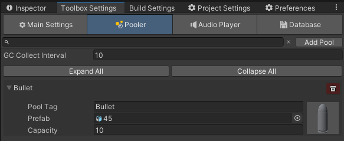
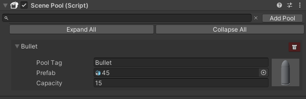

Pooler
Basics
Let's start this topic by defining what 'Pool' means. Here you can read all about this pattern:
In simple words, use pool patter when you are working with a lot of instantiating and destroying objects.
Toolbox has his own implementation of this pattern. Simple way you can use it is to define pools you need in Toolbox settings and call Pooler.Spawn(...) where you need.
...
public void Shoot()
{
var bullet = Pooler.Spawn("Bullet", currentWeapon.tip.position, Quaternion.identity).GetComponent<Bullet>();
bullet.StartMovingForward();
}
...
Here you can see that to create pool you need to define it's tag, prefab and capacity.
To create pools, which will be initialized on start, go to 'Toolbox Settings' and click on 'Pooler' tab. Here you can add or remove pools, change it's tags, prefabs and capacity.

Capacity of the pool describes how many objects you can spawn without instantiating a new one, when it's all over.
You can create pool manually in code by calling Pooler.TryAddPool(PoolData poolToAdd) or Pooler.TryAddPool(string tag, GameObject prefab, int capacity). Pool won't be added if other pool already uses specified tag.
Also you can remove pool by calling Pooler.TryRemovePool(string tag).
Scene pools
What if you want to use some pools on the specific scene? Manually creating and removing pools each time seems boring and complicated. For this reason Toolbox has a Scene Pool component, which automatically creates specified pools when scene is loaded and removes them when it is unloaded.

Creating objects
It is recommended to create all object by using Pooler, because it works with Updater and initializes objects to work properly with Toolbox.
An alternative to basic Unity's Instantiate(...) method is Pooler.Instantite(...). Use it when you need to create object without using pool.
Destroying objects
IMPORTANT! Do not destroy objects that created by Pooler.Spawn(...) method, use Pooler.TryDespawn(GameObject obj) instead. It will remove object from processing and returns it back to pool.
If you do not know exactly what object are you working with, use Pooler.DespawnOrDestroy(GameObject obj) method, so Pooler decides for itself to destroy or despawn object. If object are part of any existing pool it will be despawned otherwise it will be destroyed.
Both methods returns bool that indicates if objects despawned or destroyed or not.
Scene operations handling
There might be situation when you unloading scene that contains spawned objects. What will happen to this objects? Pooler automatically checks if you are unloading scene, thanks to Messenger, and returns all spawned objects back to its pools. So you can safely load and unload scenes, Pooler will handle all necessary stuff.
Garbage Collector
When you spawn a lot of objects, then after some amount of time you ends up with a bunch of objects that you don't need, but they are still in memory.
To solve this problem Pooler has a 'Garbage Collector', that cleans up all objects in pools until they holds an initial capacity of objects.
Garbage collector works by checking all pools every amount of time you specified in 'Toolbox Settings'. If a pool holds more objects than initial capacity, then the extra objects will be destroyed.
You can manually tell to garbage collector to clean up pools by calling Pooler.ForceGarbageCollector().